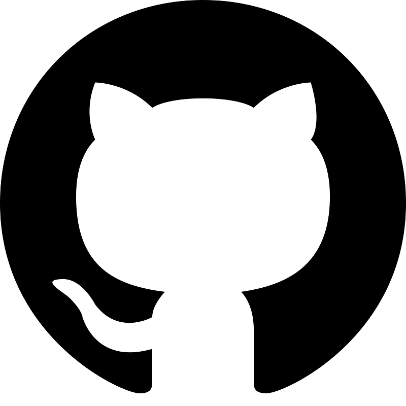
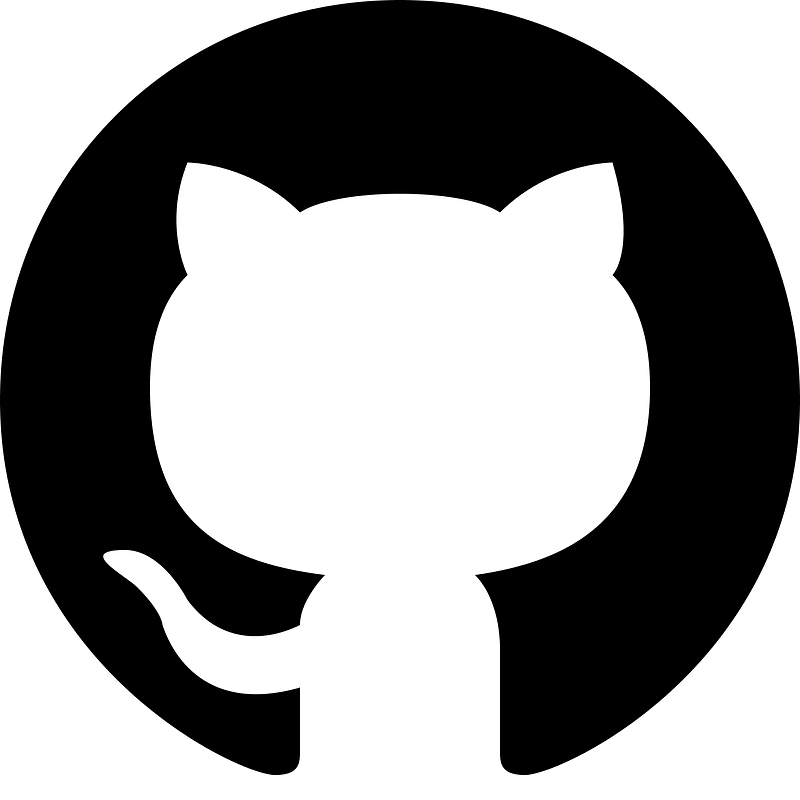

Sobre nós!
Olá! Nós somos os integrantes do ADSOS, o projeto que visa diminuir o absenteísmo nas terapias por teleatendimento. O grupo é composto por Amandha Yumi, Erick Takeshi e Giovanna Bardella, alunos de Análise e Desenvolvimento de Sistemas na FIAP, prontos para enfrentar desafios dentro da programação e resolvê-los em prol da melhoria no teleatendimento do Hospital das Clínicas (HC). Clique em uma de nossas fotos ou role a página para saber mais sobre cada um de nós!


Amandha Yumi Toyota Artulino
RM: 563549
üíª Olá! Eu sou a Amandha Yumi, tenho 19 anos e sou estudante de Análise e Desenvolvimento de Sistemas. Desde que comecei na área de tecnologia, adorei o poder de transformar ideias em solu√ß√µes reais atrav√©s do c√≥digo. Gosto muito de front-end, onde posso unir l√≥gica e criatividade, mas tamb√©m estou explorando o back-end para entender todo o processo de desenvolvimento.
 

Giovanna Bardella Gomes

RM: 561439
üíª Olá! Sou a Giovanna Bardella, uma das integrantes do grupo ADSOS. Tenho 22 anos e sou estudante de Análise e Desenvolvimento de Sistemas na FIAP. Gosto muito de juntar a l√≥gica com a criatividade, a matemática com a arte. Design e ChatBot s√£o os meus favoritos na cria√ß√£o desse projeto.
Erick Takeshi Andrade Nakajune

RM: 566059
üíª Olá, sou Erick Takeshi, um dos integrantes do grupo ADSOS. Tenho 17 anos e sou aluno da FIAP, estudando Análise e Desenvolvimento de Sistemas. Adoro juntar a minha criatividade com meus conhecimentos em matemática. Banco de Dados e Intelig√™ncia Artificial s√£o as áreas que mais me atraem, mas sempre estou buscando melhorar minhas habilidades em programa√ß√£o.